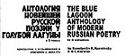

Almanacs of the Third Wave
Russians in America: The Third Wave
Almanacs
Almanacs (Альманахи), yearly collections of prose and poetry, were a popular means to provide publishing outlets in particular for lesser known or emerging authors. Some of the more popular were:

Blue LagoonKonstantin Kuzminsky (Константин Кузьминский). The Blue Lagoon Anthology of Modern Russian Poetry
Almanac of the Club of Russian Writers in New York /Альманах Клуба Русских Писателей в Нью-Йорке
First published by the Club of Russian Writers in New York in 1980 and since then every second year (Note The Club of Russian Writers in New York continues today to meet and has recently published Альманах 2007).
Антология Гнозиса
In addition to the journal, Gnosis / Гнозис, under the editorship of Arkady Rovner two separate volumes were published, I in English, II in Russian. New York. 1982.
Glagol
Edited by Carl and Ellendea Proffer. ##1-3. Ardis. Ann Arbor. 1977-1981.
Каталог
Ed. Filipp Berman. Ann Arbor: Ardis. 1982.
Перекрестки
???
The Coast / Побережье
THE COAST (Poberezh'e) 9921 Bustleton Ave., unit W-10, Philadelphia, PA 19115 USA
www.coastmagazine.org/E-mail: editor@coastmagazine.org
Editor in Chief Igor Michalevich-Kaplan (Founded in 1992 ).
"The Coast (Побережье) is an annual Russian literary almanac, that features prominent poets, writers and artists from the former USSR who have lived in the USA. Among the authors are Vasiliy Aksenov (Василий Аксенов), Vasiliy Yanovsky (Василий Яновский), Josef Brodsky (Иосиф Бродский), Dmitry Bobyshev (Дмитрий Бобышев), Vadim Kreyd (Вадим Крейд), Ludmila Shtern (Людмила Штерн), Valentina Sinkevich (Валентина Синкевич), Sergey Dovlatov (Сергей Довлатов), Nina Berberova (Нина Берберова), Mark Popovsky (Марк Поповский), Ernst Neizvestniy (Эрнст Неизвестный), Serge Hollerbach, Andrey Grizman (Андрей Гризман), Irina Mashinski (Ирина Машински), Boris Filipoff (Борис Филиппов), Tatiana Aist (Татьяна Аист), Euginia Zhiglevich (Евгения Жиглевич), Anatoly Liberman (Анатолий Либерман) and many other names. The Coast (Побережье) contains sections of Poetry, Prose, Literary Critique, Biographical Portraits, Translations, and Fine Arts, as well as biographical data of each participating author. The goal of the almanac is not only to present authors who are already well-known in the literary circles, but also to introduce many new talented individuals." The latest copies of the almanac are available from the web site electronically along with valuable information on the participating authors.
Руссика-81
Edited by A. Sumerkin (А. Сумеркин). New York: Russica. 1982.
Самосознание: сборник статей
Eds. P. Litvinov (П. Литвинов), M. Meerson-Aksenov (М. Меерсон-Аксенов), B. Shragin (Б. Шрагин). New York: Khronika. 1976.
Третья волна: Антология русского Зарубежья
Published Moscow 1991, contains works by Aksyonov (Аксенов), F. Berman (Ф. Берман), G. Vladimov (Г. Владимиров), S. Dovlatov (С. Довлатов), Ju. Gal'perin (Ю. Гальперин), A. Gladilin (А. Гладилин), F. Gorenshtein (Ф. Горенштейн), A. Zhurzhin (А. Журжин), K. Koscinskij (К. Косинский), O. Kustarev (О. Кустарев), E. Ljubin (Е. Любин), E. Limonov (Э. Лимонов), A. L'vov (А. Львов), Ju. Mamleev (Ю. Мамлеев), V. Matlin (В. Матлин), V. Maramzin (В. Марамзин), I. Ratushinkaja (И. Ратушинская), V. Rybakov (В. Рыбаков), G. Pokrass (Г. Покрасс), S. Sokolov (С. Соколов), I. Suslov (И. Суслов), A. and I. Shargodskij (А. и И. Шаргодские), A. Shepievker (А. Шепивкер), L. Shtern (Л. Штерн), S. Jur'en (С. Юрьен). Book includes short bios at end of the writers included. Aksyonov's "Чувство России" ends with the lines: "Я почти не сомневаюсь, что Россия существует и в Америке, и это относится не только к физическому существованию нашей этнической группы. Эта ’американская Россия’, разумеется, не совпадает с советской версией, но не исключено, что она ближе к астральному телу и душе." (368).
Встречи
Annual. Ed. Valentina Sinkevich (Валентина Синкевич). Philadelphia. 1983-
За тридевять земель: Антология эмиграционной прозы 80–х
ed. Elena Gessen (Елена Гессен). Hermitage 1992. Includes works by Aksyonov (Аксенов), Vladimov (Владимов), Voinovich (Войнович), Girshin (Гиршин), Efimov (Ефимов), Zajchik (Зайчик), Zernova (Зернова), Zinik (Зиник), Miloslavskii (Милославский), Pomerjantsev (Померанцев), Svirskii (Свирский), Susslov (Суслов), Fedotov (Федотов), Khazanov (Хазанов), Shtern (Штерн).
Who, What, Where and When?
Internet Links
Другие Ссылки